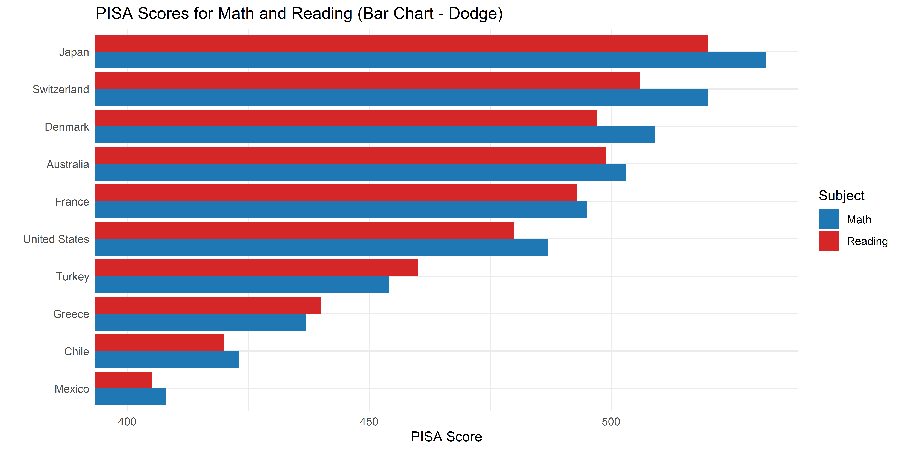

Code
data_ev <- read.csv("Data/EV_Population.csv")
data_survey <- read.csv("Data/employee-survey.csv", sep="|")Perbandingan antar kategori dalam data dapat divisualisasikan dengan berbagai jenis chart untuk mempermudah analisis dan interpretasi. Bar Chart adalah metode paling umum, sementara variasi seperti Stacked Bar, Paired Bar, dan Diverging Bar menawarkan pendekatan berbeda tergantung pada kebutuhan. Bab ini membahas berbagai chart untuk perbandingan kategori, beserta kondisi data yang sesuai, tujuan visualisasi, serta kelebihan dan kekurangannya.
data_ev <- read.csv("Data/EV_Population.csv")
data_survey <- read.csv("Data/employee-survey.csv", sep="|")| Jenis Chart | Kondisi Data | Tujuan Visualisasi | Kelebihan | Kekurangan |
|---|---|---|---|---|
| Bar Chart | Kategori | Perbandingan antar kategori | Mudah dipahami, fleksibel | Kurang efektif untuk banyak kategori |
| Lollipop Chart | Kategori | Variasi dari bar chart, lebih ringan | Visual lebih bersih, menyoroti perbedaan kecil | Kurang dikenal, kurang informatif untuk data kompleks |
| Paired Bar | Kategori | Membandingkan dua set kategori terkait | Memudahkan perbandingan langsung | Sulit dibaca jika terlalu banyak kategori |
| Stacked Bar | Kategori + Numerik | Menampilkan komposisi dalam kategori | Menghemat ruang, menampilkan distribusi | Sulit membandingkan sub-kategori |
| Diverging Bar | Kategori + Numerik | Distribusi dengan skala positif-negatif | Menampilkan keseimbangan atau perbedaan ekstrem | Sulit diinterpretasi jika terlalu banyak kategori |
| Dot Plot | Kategori + Numerik | Distribusi atau perbandingan | Lebih ringkas dari bar chart, menyoroti perbedaan kecil | Kurang umum digunakan |
| Marimekko/Mosaic | Dua Kategori | Proporsi dua variabel kategori | Efektif untuk melihat hubungan antar kategori | Sulit dibuat dan diinterpretasi |
| Unit Chart | Kategori + Proporsi | Menampilkan proporsi dengan ikon | Menarik secara visual | Kurang akurat untuk proporsi kecil |
| Waffle Chart | Kategori + Proporsi | Menampilkan proporsi dalam bentuk grid | Lebih estetis dari pie chart | Kurang akurat untuk nilai kecil |
| Heatmap | Matriks (Kategori + Numerik) | Representasi warna dari nilai numerik | Sangat efektif untuk data besar | Sulit untuk interpretasi nilai absolut |
| Gauge/Bullet | Numerik | Menampilkan indikator atau target | Bagus untuk KPI atau performa | Kurang efektif untuk perbandingan |
| Bubble Chart | Kategori + Numerik | Menampilkan hierarki atau hubungan | Mampu menunjukkan lebih dari dua dimensi | Sulit dibaca jika ada banyak data |
| Sankey Diagram | Kategori + Hubungan | Menampilkan aliran data antar kategori | Sangat efektif untuk alur proses | Sulit dibuat dan diinterpretasi |
| Waterfall Chart | Numerik | Menampilkan perubahan kumulatif | Bagus untuk analisis finansial | Tidak cocok untuk banyak kategori |

Bar chart (diagram batang) adalah salah satu teknik visualisasi data yang digunakan untuk membandingkan jumlah kategori berdasarkan ukuran tertentu. Dalam konteks ini, kita membandingkan jumlah kendaraan listrik dari berbagai brand.
# Sort
data_ev_sorted <- data_ev %>%
count(Make, name = "count") %>%
arrange(desc(count)) %>%
mutate(Make = str_to_title(Make))
# Top 3
top3 <- head(data_ev_sorted$Make, 3)
# Viz
chart <-
ggplot(data_ev_sorted,
aes(x = reorder(Make, count), y = count,
fill = ifelse(Make %in% top3, "steelblue", "gray50"))) +
# Bar chart
geom_bar(stat = "identity", width = 0.8) +
scale_fill_identity() + # Apply warna tanpa legend
# Label ujung bar
geom_text(aes(label = count), hjust = -0.2, size = 2.5) +
# Settings
geom_hline(yintercept = -0.3, color = "black", linewidth = 0.5) +
coord_flip() +
theme_minimal() +
labs(title = "Dominasi Tesla dalam Pasar Kendaraan Listrik",
subtitle = "Frekuensi Pendaftaran Kendaraan Listrik dari Berbagai Brand",
x = "",
y = "") +
theme(axis.text.y = element_text(size = 8, hjust = 1, face = "bold",
margin = margin(r = -25)),
plot.title = element_text(hjust = -0.17, size = 14, face = "bold"),
plot.subtitle = element_text(hjust = -0.13, size = 8),
panel.grid.major.y = element_blank(),
panel.grid.major.x = element_line(linetype = "dashed"),
panel.grid.minor.x = element_line(linetype = "dashed")
)
chart
# Save Chart
ggsave("Chart/01_Bar.png", chart, dpi = 300, height = 5, width = 10)Bar chart dalam ggplot2 bisa dikustomisasi untuk menyoroti informasi tertentu, seperti menampilkan top 3 brand, menambahkan frekuensi di ujung batang, atau mengubah warna kategori tertentu. Misalnya, dalam visualisasi ini, Tesla didominasi dengan warna biru, sedangkan brand lain berwarna abu-abu.
Namun, dalam bentuk sederhananya, bar chart cukup dibuat dengan menambahkan geom_bar().
ggplot(data_ev, aes(x = Make)) +
# Bar chart
geom_bar(fill = "#f1bb68")Untuk membuatnya horizontal, cukup menambahkan coord_flip().
ggplot(data_ev_sorted,
aes(x = reorder(Make, count), y = count)) +
# Bar chart
geom_bar(stat = "identity", width = 0.8, fill = "steelblue") +
coord_flip()Lolipop Chart adalah variasi bar chart yang menggunakan garis sebagai batang dan titik di ujungnya untuk menyoroti nilai kategori. Cocok digunakan saat bar chart terasa terlalu tebal atau ingin menampilkan data dengan lebih rapi. Karena tampilannya lebih elegan, lolipop chart sering dipakai dalam laporan atau presentasi, terutama untuk jumlah kategori yang tidak terlalu banyak.
# Sort & Filter
data_ev_filtered <- data_ev %>%
count(Make, name = "count") %>%
dplyr::filter(count > 2000) %>%
arrange(desc(count)) %>%
mutate(Make = str_to_title(Make))
# Top 3
top3 <- head(data_ev_filtered$Make, 3)
chart <-
ggplot(data_ev_filtered, aes(x = reorder(Make, count), y = count)) +
# Lolipop Stick
geom_segment(aes(xend = Make, y = 0, yend = count),
color = ifelse(data_ev_filtered$Make %in% top3,
"steelblue", "gray50"),
linewidth = 1.5) +
# Lolipop Head
geom_point(size = 10,
pch = 19,
color = ifelse(data_ev_filtered$Make %in% top3,
"steelblue", "gray50")) +
# Label
geom_text(aes(label = count), color = "white", size = 2.5, fontface = "bold") +
# Tema dan layout
coord_flip() +
theme_minimal() +
scale_color_identity() + # Apply warna tanpa legend
geom_hline(yintercept = -0.3, color = "black", linewidth = 0.5) +
labs(title = "Dominasi tesla dalam pasar kendaraan listrik",
subtitle = "Hanya menampilkan brand dengan lebih 2000 kendaraan terdaftar",
x = "",
y = "") +
theme(axis.text.y = element_text(size = 8, hjust = 1, face = "bold",
margin = margin(r = -25)),
plot.title = element_text(hjust = -0.05, size = 14, face = "bold"),
plot.subtitle = element_text(hjust = -0.04, size = 8),
panel.grid.major.y = element_blank(),
panel.grid.major.x = element_line(linetype = "dashed"),
panel.grid.minor.x = element_line(linetype = "dashed")
)
chart# Save Chart
ggsave("Chart/02_lolipop.png", chart, dpi = 300, height = 5, width = 10)Meneruskan kustomisasi bar chart seperti highlight top 3, lolipop chart juga dapat digunakan untuk memberikan tampilan yang lebih bersih dan minimalis. Namun, karena kepala lolipop cukup besar, saya menyaring data dengan hanya menampilkan brand yang memiliki lebih dari 2000 kendaraan terdaftar agar visualisasi tetap jelas dan tidak terlalu ramai.
chart <-
ggplot(data_ev_filtered, aes(x = reorder(Make, count), y = count)) +
# Lolipop Stick
geom_segment(aes(xend = Make, y = 0, yend = count),
color = ifelse(data_ev_filtered$Make %in% top3, "steelblue", "gray50"),
linewidth = 1.5) +
# Lolipop Head
geom_point(aes(size = count,
color = ifelse(Make %in% top3, "steelblue", "gray50")),
pch = 19) +
# Tema dan layout
coord_flip() +
theme_minimal() +
scale_color_identity() + # Apply warna tanpa legend
scale_size_continuous(range = c(2, 14)) + # Ukuran lebih besar
geom_hline(yintercept = -0.3, color = "black", linewidth = 0.5) +
labs(title = "Dominasi Tesla dalam Pasar Kendaraan Listrik",
subtitle = "Hanya Menampilkan Brand dengan Lebih 2000 Kendaraan Terdaftar",
x = "",
y = "") +
theme(axis.text.y = element_text(size = 8, hjust = 1, face = "bold",
margin = margin(r = -25)),
plot.title = element_text(hjust = -0.05, size = 14, face = "bold"),
plot.subtitle = element_text(hjust = -0.04, size = 8),
panel.grid.major.y = element_blank(),
panel.grid.major.x = element_line(linetype = "dashed"),
panel.grid.minor.x = element_line(linetype = "dashed"),
legend.position = "none"
)
chart
# Save Chart
ggsave("Chart/02_lolipop_var.png", chart, dpi = 300, height = 5, width = 10)Selain itu, lolipop chart juga bisa dibuat dengan ukuran kepala yang bervariasi, mencerminkan jumlah kendaraan setiap brand. Namun, dalam kasus ini, saya menghapus label frekuensi di dalam lingkaran karena posisinya kurang pas untuk beberapa nilai.
chart <-
ggplot(data_ev_filtered, aes(x = reorder(Make, count), y = count)) +
# Lolipop Stick
geom_segment(aes(xend = Make, y = 0, yend = count),
color = "steelblue",
linewidth = 1.5) +
# Lolipop Head
geom_point(size = 10, color = "steelblue", pch = 19) +
coord_flip()
chart
Pondasi utama dari lolipop chart adalah geom_segment() yang membentuk garis sebagai batang lolipop dan geom_point() sebagai kepala lolipop.

Paired Bar Chart digunakan untuk membandingkan dua kategori dalam satu variabel, misalnya jenis kendaraan listrik BEV vs PHEV atau kelayakan subsidi kendaraan. Dalam visualisasi ini, setiap merek memiliki dua batang berdampingan untuk menampilkan perbedaan jumlah pada setiap kategori.
data_ev_grouped <- data_ev %>%
count(Make, Electric.Vehicle.Type, name = "count") %>%
dplyr::filter(count > 1000) %>%
arrange(desc(count)) %>%
mutate(Make = str_to_title(Make)) # Kapitalisasi merek
# Top 3 merek berdasarkan total kendaraan
top3 <- data_ev_grouped %>%
group_by(Make) %>%
summarise(total = sum(count)) %>%
arrange(desc(total)) %>%
head(3) %>%
pull(Make)
# Paired Bar Chart
chart <- ggplot(data_ev_grouped,
aes(x = reorder(Make, count), y = count, fill = Electric.Vehicle.Type)) +
# Bar chart dengan posisi dodge untuk perbandingan antar kategori
geom_bar(stat = "identity", position = "dodge", width = 0.8) +
# Label di ujung bar
geom_text(aes(label = count), position = position_dodge(width = 0.8),
hjust = -0.2, size = 3) +
# Garis grid horizontal
geom_hline(yintercept = -0.3, color = "black", linewidth = 0.5) +
coord_flip() +
theme_minimal() +
# Warna berbeda untuk kategori kendaraan listrik
scale_fill_manual(values = c("BEV" = "#6a3f48",
"PHEV" = "#caa847")) +
labs(title = "Dominasi Tesla dalam Pasar Kendaraan Listrik",
subtitle = "Frekuensi Pendaftaran Kendaraan Listrik BEV dan PHEV dari Berbagai Merek",
fill = "Jenis Kendaraan", # Label legend
x = "",
y = "") +
theme(axis.text.y = element_text(size = 8, hjust = 1, face = "bold",
margin = margin(r = -25)),
plot.title = element_text(hjust = -0.06, size = 14, face = "bold"),
plot.subtitle = element_text(hjust = -0.05, size = 8),
panel.grid.major.y = element_blank(),
panel.grid.major.x = element_line(linetype = "dashed"),
panel.grid.minor.x = element_line(linetype = "dashed"),
legend.text = element_text(size = 8),
legend.title = element_text(size = 8),
legend.key.size = unit(0.5, "cm")
)
chart# Save Chart
ggsave("Chart/01_Bar_Paired.png", chart, dpi = 300, height = 5, width = 10)Pada contoh ini, saya hanya menampilkan merek dengan lebih dari 1000 kendaraan terdaftar untuk menjaga visualisasi tetap fokus dan mudah dibaca. Warna berbeda digunakan untuk membedakan kategori, sehingga lebih jelas dalam melihat dominasi masing-masing jenis kendaraan dalam satu merek. Tesla masih mendominasi pasar EV, terutama dalam kategori BEV, sementara merek lain seperti Toyota dan Jeep lebih banyak dalam kategori PHEV.
data_ev_grouped <- data_ev %>%
count(Make, CAFV.Eligibility.Simple, name = "count") %>%
dplyr::filter(count > 1000) %>%
arrange(desc(count)) %>%
mutate(Make = str_to_title(Make)) # Kapitalisasi merek
# Top 3 merek berdasarkan total kendaraan
top3 <- data_ev_grouped %>%
group_by(Make) %>%
summarise(total = sum(count)) %>%
arrange(desc(total)) %>%
head(3) %>%
pull(Make)
# Paired Bar Chart
chart <- ggplot(data_ev_grouped,
aes(x = reorder(Make, count), y = count, fill = CAFV.Eligibility.Simple)) +
# Bar chart dengan posisi dodge untuk perbandingan antar kategori
geom_bar(stat = "identity", position = "dodge", width = 0.8) +
# Label di ujung bar
geom_text(aes(label = count), position = position_dodge(width = 0.8),
hjust = -0.2, size = 3) +
# Garis grid horizontal
geom_hline(yintercept = -0.3, color = "black", linewidth = 0.5) +
coord_flip() +
theme_minimal() +
# Warna berbeda untuk kategori kendaraan listrik
scale_fill_manual(values = c("Eligible" = "#88b07e",
"Not Eligible" = "#9c3b66")) +
labs(title = "Dominasi Tesla dalam Pasar Kendaraan Listrik",
subtitle = "Perbandingan Kelayakan Kendaraan Listrik di Berbagai Merek",
fill = "Jenis Kendaraan", # Label legend
x = "",
y = "") +
theme(axis.text.y = element_text(size = 8, hjust = 1, face = "bold",
margin = margin(r = -25)),
plot.title = element_text(hjust = -0.06, size = 14, face = "bold"),
plot.subtitle = element_text(hjust = -0.05, size = 8),
panel.grid.major.y = element_blank(),
panel.grid.major.x = element_line(linetype = "dashed"),
panel.grid.minor.x = element_line(linetype = "dashed"),
legend.text = element_text(size = 8),
legend.title = element_text(size = 8),
legend.key.size = unit(0.5, "cm")
)
chart
# Save Chart
ggsave("Chart/01_Bar_Paired.png", chart, dpi = 300, height = 5, width = 10)Grafik Paired Bar Chart ini membandingkan kelayakan kendaraan listrik dari berbagai merek, dibagi menjadi dua kategori: “Eligible†(layak mendapatkan subsidi atau insentif) dan “Not Eligible†(tidak layak mendapatkan subsidi).
Dari hasil visualisasi, Tesla masih menjadi pemimpin dengan mayoritas kendaraannya termasuk dalam kategori “Eligibleâ€, menunjukkan bahwa banyak model Tesla memenuhi syarat untuk subsidi atau program insentif kendaraan listrik. Di sisi lain, beberapa merek seperti Jeep dan Ford memiliki jumlah kendaraan “Not Eligible†yang cukup besar, menunjukkan bahwa banyak model mereka tidak memenuhi syarat yang ditetapkan.
ggplot(data_ev,
aes(x = Make, fill=Electric.Vehicle.Type)) +
# Bar chart
geom_bar(position="dodge") +
coord_flip()
Pondasi utama dari paired bar chart dalam ggplot2 adalah geom_bar(position = "dodge"), yang memastikan kedua kategori tampil bersebelahan dalam satu sumbu. Variasi ini cocok digunakan ketika ingin menganalisis perbandingan kategori dalam satu kelompok, seperti jenis kendaraan, status kelayakan, atau perbedaan regional.

Stacked Bar Chart digunakan untuk membandingkan komposisi antar kategori dalam satu grup, seperti kelayakan kendaraan listrik dalam setiap merek. Berbeda dengan Paired Bar Chart yang menampilkan dua kategori berdampingan, Stacked Bar Chart menumpuk kategori dalam satu batang untuk menunjukkan proporsi relatif setiap kategori dalam satu grup.
Jika fokus pada perbandingan jumlah, pilih Paired Bar, sedangkan jika ingin melihat komposisi dalam satu grup, gunakan Stacked Bar.
data_ev_grouped <- data_ev %>%
count(Make, CAFV.Eligibility.Simple, name = "count") %>%
dplyr::filter(count > 1000) %>%
arrange(desc(count)) %>%
mutate(Make = str_to_title(Make)) # Kapitalisasi merek
# Top 3 merek berdasarkan total kendaraan
top3 <- data_ev_grouped %>%
group_by(Make) %>%
summarise(total = sum(count)) %>%
arrange(desc(total)) %>%
head(3) %>%
pull(Make)
# Paired Bar Chart
chart <- ggplot(data_ev_grouped,
aes(x = reorder(Make, count), y = count, fill = CAFV.Eligibility.Simple)) +
# Bar chart dengan posisi dodge untuk perbandingan antar kategori
geom_bar(stat = "identity", position = "stack", width = 0.8) +
# Label di ujung bar
geom_text(aes(label = count),
position = position_stack(vjust = 0.5),
size = 3, color = "white", fontface = "bold") +
# Garis grid horizontal
geom_hline(yintercept = -0.3, color = "black", linewidth = 0.5) +
coord_flip() +
theme_minimal() +
# Warna berbeda untuk kategori kendaraan listrik
scale_fill_manual(values = c("Eligible" = "#88b07e",
"Not Eligible" = "#9c3b66")) +
labs(title = "Dominasi Tesla dalam Pasar Kendaraan Listrik",
subtitle = "Perbandingan Kelayakan Kendaraan Listrik di Berbagai Merek",
fill = "Jenis Kendaraan", # Label legend
x = "",
y = "") +
theme(axis.text.y = element_text(size = 8, hjust = 1, face = "bold",
margin = margin(r = -25)),
plot.title = element_text(hjust = -0.06, size = 14, face = "bold"),
plot.subtitle = element_text(hjust = -0.05, size = 8),
panel.grid.major.y = element_blank(),
panel.grid.major.x = element_line(linetype = "dashed"),
panel.grid.minor.x = element_line(linetype = "dashed"),
legend.text = element_text(size = 8),
legend.title = element_text(size = 8),
legend.key.size = unit(0.5, "cm")
)
chart# Save Chart
ggsave("Chart/01_Bar_Paired.png", chart, dpi = 300, height = 5, width = 10)Stacked Bar berdasarkan Frekuensi Absolut menampilkan jumlah kendaraan dalam setiap kategori (Eligible vs Not Eligible) per merek. Pada visualisasi ini, Tesla mendominasi kategori Eligible, menunjukkan bahwa hampir seluruh kendaraannya memenuhi syarat subsidi. Sementara itu, beberapa merek lain memiliki distribusi yang lebih seimbang, dengan porsi kendaraan Not Eligible yang lebih besar.
data_ev_grouped <- data_ev %>%
count(Make, CAFV.Eligibility.Simple, name = "count") %>%
dplyr::filter(sum(count) > 1000, .by = Make) %>% # Pastikan hanya merek dengan total >1000 kendaraan
arrange(desc(count)) %>%
mutate(Make = str_to_title(Make)) # Kapitalisasi merek
# Hitung proporsi dalam setiap merek
data_ev_grouped <- data_ev_grouped %>%
group_by(Make) %>%
mutate(percentage = count / sum(count)) %>%
ungroup()
# Stacked Bar Chart dengan Persentase
chart <- ggplot(data_ev_grouped,
aes(x = Make, y = percentage, fill = CAFV.Eligibility.Simple)) +
# Bar chart full persentase
geom_bar(stat = "identity", position = "fill", width = 0.8) +
# Label di tengah bar dalam format persen
geom_text(aes(label = scales::percent(percentage, accuracy = 1)),
position = position_fill(vjust = 0.5),
size = 3, color = "white", fontface = "bold") +
# Grid horizontal
geom_hline(yintercept = 0, color = "black", linewidth = 0.5) +
coord_flip() +
theme_minimal() +
# Warna berbeda untuk kategori eligibility
scale_fill_manual(values = c("Not Eligible" = "#9c3b66",
"Eligible" = "#88b07e")) +
labs(title = "Dominasi Tesla dalam Pasar Kendaraan Listrik",
subtitle = "Distribusi Persentase Kelayakan Kendaraan Listrik di Berbagai Merek",
fill = "Jenis Kendaraan",
x = "",
y = "Persentase") +
scale_y_continuous(labels = scales::percent_format(accuracy = 1)) + # Pastikan sumbu Y dalam persen
theme(axis.text.y = element_text(size = 8, hjust = 1, face = "bold",
margin = margin(r = -25)),
plot.title = element_text(hjust = -0.07, size = 14, face = "bold"),
plot.subtitle = element_text(hjust = -0.06, size = 8),
panel.grid.major.y = element_blank(),
panel.grid.major.x = element_line(linetype = "dashed"),
panel.grid.minor.x = element_line(linetype = "dashed"),
legend.text = element_text(size = 8),
legend.key.size = unit(0.5, "cm"),
legend.position = "top",
legend.direction = "horizontal",
legend.justification = c(-0.055, 0.5)
) +
guides(fill = guide_legend(title = NULL))
chart# Save Chart
ggsave("Chart/Stacked_Bar_Percentage.png", chart, dpi = 300, height = 5, width = 10)Sedangkan Stacked Bar berdasarkan Persentase menunjukkan proporsi setiap kategori dalam satu merek, sehingga memudahkan perbandingan antar merek tanpa dipengaruhi oleh perbedaan jumlah total kendaraan. Tesla, Nissan, dan Chevrolet memiliki 100% kendaraan yang Eligible, sedangkan merek seperti BMW dan Audi memiliki lebih banyak kendaraan dalam kategori Not Eligible.
Versi sederhana dari Stacked Bar Chart cukup dibuat dengan geom_bar(position="stack").
ggplot(data_ev,
aes(x = Make, fill=Electric.Vehicle.Type)) +
# Bar chart
geom_bar(position="stack") +
coord_flip()Diverging Bar Chart digunakan untuk menampilkan distribusi kategori yang memiliki skala positif-negatif, seperti sentimen survei, tingkat kepuasan, atau opini publik. Berbeda dari Stacked Bar Chart, Diverging Bar Chart memusatkan kategori netral di tengah, sehingga perbandingan antara respons positif dan negatif lebih jelas.
# Buat mapping unik untuk setiap pertanyaan
question_map <- data_survey %>%
distinct(Question) %>%
mutate(Q_Label = paste0("Q.", str_pad(row_number(), 2, pad = "0"))) # Ubah ke dua digit
# Gabungkan kembali ke data asli
data_survey <- data_survey %>%
left_join(question_map, by = "Question") %>%
select(-Question) %>%
rename(Question = Q_Label) # Ganti dengan label baru
# Konversi teks ke angka menggunakan mutate + case_when()
data_survey_cleaned <- data_survey %>%
# Filter hanya respon valid (hapus Not Applicable dan data kosong)
dplyr::filter(Response.Text != "Not Applicable", Response.Text != "") %>%
# Ubah Response.Text menjadi angka
mutate(Response.Value = case_when(
Response.Text == "Strongly Agree" ~ 2,
Response.Text == "Agree" ~ 1,
Response.Text == "Disagree" ~ -1,
Response.Text == "Strongly Disagree" ~ -2
)) %>%
# Hitung jumlah masing-masing respons per pertanyaan
count(Question, Response.Text, Response.Value, name = "Count")
# Pastikan faktor dalam urutan yang benar
data_survey_cleaned <- data_survey_cleaned %>%
mutate(Response.Text = factor(Response.Text,
levels = c("Strongly Agree", "Agree", "Disagree", "Strongly Disagree")))
# Ubah sisi negatif untuk visualisasi divergen
data_survey_cleaned <- data_survey_cleaned %>%
mutate(Count = ifelse(Response.Value < 0, -Count, Count)) %>%
dplyr::filter(Question != "Q.12") %>%
mutate(Question = factor(Question, levels = rev(unique(Question))))# Warna divergen
color_palette <- c("Strongly Agree" = "#08306b",
"Agree" = "#6baed6",
"Disagree" = "#fcae91",
"Strongly Disagree" = "#cb181d")
# Plot diverging bar chart dengan label frekuensi
ggplot(data_survey_cleaned, aes(x = Question, y = Count, fill = Response.Text)) +
geom_bar(stat = "identity", position = "stack", width = 0.8) +
scale_fill_manual(values = color_palette) +
# Tambahkan label frekuensi di dalam bar
geom_text(aes(label = abs(Count)),
position = position_stack(vjust = 0.5),
size = 3, color = "white", fontface = "bold") +
coord_flip() +
theme_minimal() +
labs(title = "Survey Responses - Diverging Bar Chart",
subtitle = "Distribusi Sentimen Responden Berdasarkan Pertanyaan",
x = "",
y = "") +
scale_y_continuous(breaks = seq(-50, 50, 10), labels = abs(seq(-50, 50, 10))) + # Pastikan label y tetap positif
theme(panel.grid.major.y = element_blank(),
panel.grid.minor.y = element_blank(),
panel.grid.major.x = element_line(linetype = "dashed"),
legend.position = "top",
legend.direction = "horizontal",
legend.title = element_blank()) # Hilangkan judul legend
Grafik ini memberikan gambaran seberapa kuat kecenderungan sentimen responden terhadap setiap pertanyaan, memungkinkan analisis lebih lanjut tentang topik mana yang mendapatkan tanggapan positif atau negatif yang signifikan.

Dot plot adalah versi lebih ringkas dan mudah dibaca dari paired bar chart. Jika paired bar chart menampilkan dua kategori sebagai batang berdampingan, dot plot menggantinya dengan titik dan garis penghubung. Garis ini menyoroti perbedaan antar kategori dalam satu grup, sehingga lebih jelas dibandingkan melihat dua batang terpisah.
# Buat dataset PISA
data_pisa <- data.frame(
Country = c("Japan", "Switzerland", "Denmark", "France", "Australia",
"United States", "Turkey", "Greece", "Chile", "Mexico"),
Math = c(532, 520, 509, 495, 503, 487, 454, 437, 423, 408),
Reading = c(520, 506, 497, 493, 499, 480, 460, 440, 420, 405)
)
# Ubah data ke format long untuk visualisasi dot plot
data_pisa_long <- data_pisa %>%
pivot_longer(cols = c(Math, Reading), names_to = "Subject", values_to = "Score")
# Warna untuk kategori Math dan Reading
color_palette <- c("Math" = "#1f77b4", "Reading" = "#d62728")Dalam R (ggplot2), dot plot dibuat dengan kombinasi geom_point() untuk titik dan geom_line() untuk menghubungkan kategori dalam satu grup. Berikut adalah contoh dot plot yang membandingkan skor PISA dalam Math dan Reading di beberapa negara.
Dalam ggplot2, dot plot dibuat menggunakan kombinasi:
🔹 geom_point() → Untuk menampilkan titik skor Math dan Reading.
🔹 geom_line() → Untuk menghubungkan kedua titik dalam satu negara, memudahkan analisis perbedaannya.
# Plot dot plot
ggplot(data_pisa_long, aes(x = Score, y = reorder(Country, Score), color = Subject)) +
geom_line(aes(group = Country), color = "black") + # Garis selisih
geom_point(size = 4) + # Titik
scale_color_manual(values = color_palette) + # Warna kategori
theme_minimal() +
labs(title = "PISA Scores for Math and Reading among 10 OECD Countries",
x = "PISA Score",
y = "",
color = "Subject") +
theme(legend.position = "top",
legend.direction = "horizontal",
plot.title = element_text(size = 14, face = "bold"),
axis.text.y = element_text(face = "bold"))Misalnya, dalam visualisasi ini, dot plot digunakan untuk membandingkan skor PISA dalam Math dan Reading di 10 negara OECD. Jika kita menggunakan paired bar chart, setiap negara akan memiliki dua batang (satu untuk Math, satu untuk Reading), yang bisa membuat perbandingan antar kategori kurang intuitif. Dengan dot plot:
✅ Setiap negara memiliki dua titik (satu untuk Math, satu untuk Reading).
✅ Garis penghubung antar titik menunjukkan perbedaan skor dalam satu negara.
✅ Jika titik Math lebih ke kanan, berarti skor Math lebih tinggi dibanding Reading, dan sebaliknya.
Dari grafik ini, kita bisa melihat bahwa beberapa negara seperti Jepang dan Swiss memiliki skor Math yang lebih tinggi dibandingkan Reading, sedangkan di beberapa negara seperti Meksiko dan Chili, skor Reading cenderung lebih rendah dari Math.
Untuk membandingkan efektivitas visualisasi, berikut juga ditampilkan versi paired bar chart dari data yang sama. Dalam paired bar chart, perbedaan antar kategori bisa menjadi kurang terlihat, terutama jika selisihnya kecil atau jumlah kategori banyak.
ggplot(data_pisa_long, aes(x = Score, y = reorder(Country, Score), fill = Subject)) +
geom_bar(stat = "identity", position = "dodge") +
scale_fill_manual(values = color_palette) +
theme_minimal() +
labs(title = "PISA Scores for Math and Reading (Bar Chart - Dodge)",
x = "PISA Score", y = "", fill = "Subject") +
coord_cartesian(xlim = c(400, NA))
Visualisasi untuk membandingkan proporsi dua variabel kategori.


Digunakan untuk menampilkan proporsi dalam bentuk ikon atau blok.

# Buat dataset grid untuk tahun 2000 (100 kotak) dan tahun 2015 (57 kotak)
unit_2000 <- expand.grid(x = 1:10, y = 1:10) %>%
mutate(Year = "2000") %>%
slice(1:100) # Ambil hanya 100 unit
unit_2015 <- expand.grid(x = 1:10, y = 1:10) %>%
mutate(Year = "2015") %>%
slice(1:57) # Ambil hanya 57 unit
# Gabungkan dataset
unit_chart_data <- bind_rows(unit_2000, unit_2015)
# Plot Unit Chart
ggplot(unit_chart_data, aes(x = x, y = y, fill = Year)) +
geom_tile(color = "white", linewidth = 0.5) +
scale_fill_manual(values = c("2000" = "orange", "2015" = "blue")) +
labs(title = "Unit Chart: Poverty Reduction",
subtitle = "Each square represents 1 million people",
x = "", y = "") +
facet_wrap(~Year, scales = "free") + # Pisahkan per Tahun
theme_void() +
theme(legend.position = "none") # Sembunyikan legend# Buat data proporsi
poverty_data <- c("Nigeria (54%)" = 54, "Ethiopia (27%)" = 27, "Others" = 19)
# Waffle Chart
waffle(poverty_data, rows = 10, colors = c("#E15759", "#F28E2B", "#BAB0AC")) +
labs(title = "Waffle Chart: Poverty Distribution",
subtitle = "Percentage of People in Extreme Poverty") +
theme_minimal()
Visualisasi matriks yang menggunakan warna untuk mewakili nilai numerik.

# Membuat data untuk 3 bulan (Januari-Maret 2024)
dates <- seq(as.Date("2024-01-01"), as.Date("2024-03-31"), by = "day")
set.seed(123)
data <- data.frame(
date = dates,
value = runif(length(dates), 0, 100)
)
# Menambahkan informasi hari dan minggu
data <- data %>%
mutate(
weekday = wday(date, week_start = 1), # 1 = Senin sebagai awal minggu
week = week(date),
month = format(date, "%B"),
monthweek = as.numeric(format(date, "%W")) -
as.numeric(format(as.Date(paste0(format(date, "%Y-%m"), "-01")), "%W")) + 1
)
# Membuat plot
ggplot(data, aes(x = weekday, y = monthweek, fill = value)) +
geom_tile(color = "white", size = 0.1) +
scale_fill_gradient(low = "#e5f5f9", high = "#2ca25f") +
facet_wrap(~month, ncol = 3, scales = "free") +
scale_x_continuous(
breaks = 1:7,
labels = c("Su", "Mo", "Tu", "We", "Th", "Fr", "Sa"),
expand = c(0, 0)
) +
scale_y_reverse(expand = c(0, 0)) +
theme_minimal() +
theme(
axis.title = element_blank(),
panel.grid = element_blank(),
legend.position = "none",
strip.text = element_text(size = 12, face = "bold"),
plot.background = element_rect(fill = "white", color = NA),
panel.background = element_rect(fill = "white", color = NA)
) +
labs(title = "Calendar Heatmap")Warning: Using `size` aesthetic for lines was deprecated in ggplot2 3.4.0.
ℹ Please use `linewidth` instead.
# Alternative menggunakan package calendR
# Membuat tiga kalender terpisah
calendR(year = 2024, month = 1,
special.days = runif(31, 0, 100),
gradient = TRUE,
low.col = "#e5f5f9",
special.col = "#2ca25f",
title = "January 2024")calendR(year = 2024, month = 2,
special.days = runif(29, 0, 100),
gradient = TRUE,
low.col = "#e5f5f9",
special.col = "#2ca25f",
title = "February 2024")calendR(year = 2024, month = 3,
special.days = runif(31, 0, 100),
gradient = TRUE,
low.col = "#e5f5f9",
special.col = "#2ca25f",
title = "March 2024")
Menampilkan pengukuran dalam format indikator atau skala.
# Buat Data Bullet Chart
bullet_data <- data.frame(
Category = c("ALL", "Furniture", "Office Supplies", "Technology"),
Target = c(1400000, 500000, 400000, 500000),
Actual = c(900000, 350000, 300000, 400000),
Range1 = c(500000, 200000, 150000, 250000),
Range2 = c(1000000, 400000, 300000, 450000)
)
# Plot Bullet Chart
ggplot(bullet_data, aes(y = Category)) +
geom_bar(aes(x = Target), stat = "identity", fill = "#D5E5A3", width = 0.6) +
geom_bar(aes(x = Range2), stat = "identity", fill = "#F4D03F", width = 0.6) +
geom_bar(aes(x = Range1), stat = "identity", fill = "#E74C3C", width = 0.6) +
geom_bar(aes(x = Actual), stat = "identity", fill = "black", width = 0.2) +
theme_minimal() +
labs(title = "Bullet Chart: Target vs Actual", x = "Nilai (K)", y = "") +
scale_x_continuous(labels = scales::comma)
Digunakan untuk menunjukkan hierarki atau hubungan antar data.


# Buat data contoh
bubble_data <- data.frame(
Country = c("India", "Nigeria", "China", "Congo", "Indonesia", "Tanzania", "Kenya"),
Population = c(208.1, 64.8, 100, 53.2, 15.1, 24.1, 17.8),
PovertyRate = c(15, 16, 12, 18, 14, 17, 15)
)
# Warna berdasarkan tingkat kemiskinan
bubble_data$Color <- ifelse(bubble_data$PovertyRate >= 14.5, "orange", "blue")
# Plot Bubble Comparison
ggplot(bubble_data, aes(x = Population, y = PovertyRate, size = Population, fill = Color)) +
geom_point(shape = 21, alpha = 0.7, color = "black") +
scale_size(range = c(5, 25)) +
scale_fill_manual(values = c("orange" = "orange", "blue" = "blue")) +
geom_text(aes(label = Country), vjust = 1, color = "black", size = 5) +
theme_minimal() +
labs(title = "Bubble Comparison: Number of People in Poverty",
subtitle = "Orange: Poverty rate > 14.5%, Blue: Poverty rate < 14.5%",
x = "Population (millions)",
y = "Poverty Rate (%)") +
theme(legend.position = "none")Diagram aliran yang menunjukkan hubungan antar kategori.


# Contoh data untuk aliran dukungan keuangan
sankey_data <- data.frame(
Source = c("Germany", "Germany", "Germany", "Germany", "Germany",
"UK", "UK", "UK", "UK", "UK",
"US", "US", "US", "US", "US"),
Target = c("Sub-Saharan Africa", "Southern and Central Asia", "Other Asia and Oceania",
"Middle East and North Africa", "Europe",
"Sub-Saharan Africa", "Southern and Central Asia", "Other Asia and Oceania",
"Latin America and Caribbean", "Europe",
"Sub-Saharan Africa", "Southern and Central Asia", "Middle East and North Africa",
"Latin America and Caribbean", "Europe"),
Value = c(10, 15, 20, 30, 25, 12, 18, 14, 28, 28, 22, 16, 19, 23, 20)
)
# Plot Sankey Diagram menggunakan ggalluvial
ggplot(sankey_data, aes(axis1 = Source, axis2 = Target, y = Value)) +
geom_alluvium(aes(fill = Source), width = 1/12) +
geom_stratum(width = 1/12, fill = "gray") +
geom_text(stat = "stratum", aes(label = after_stat(stratum)), size = 5) +
theme_minimal() +
labs(title = "Aliran Dukungan Keuangan",
subtitle = "Dari Jerman, Inggris, dan AS ke Berbagai Wilayah Dunia",
x = NULL, y = "Persentase Dukungan") +
theme(legend.position = "none")Menunjukkan perubahan nilai dalam urutan kumulatif.